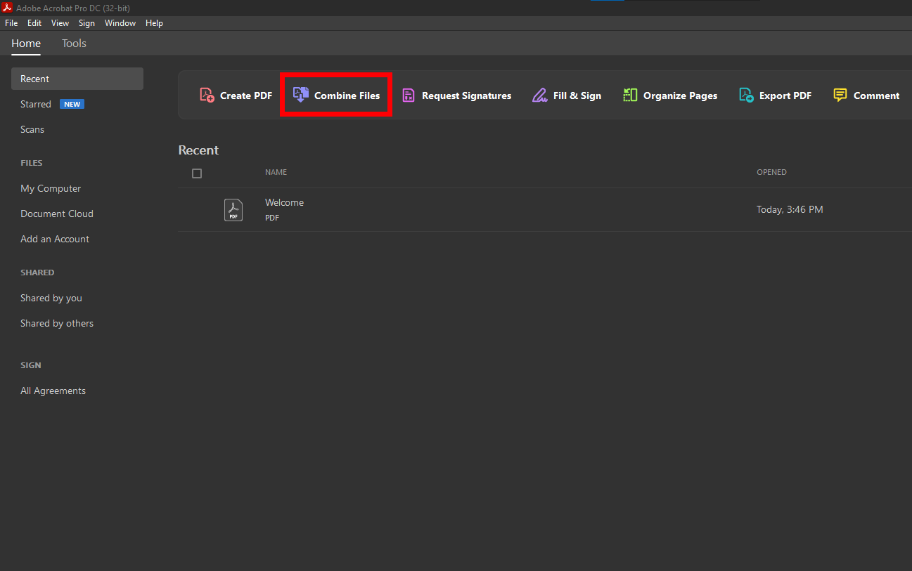
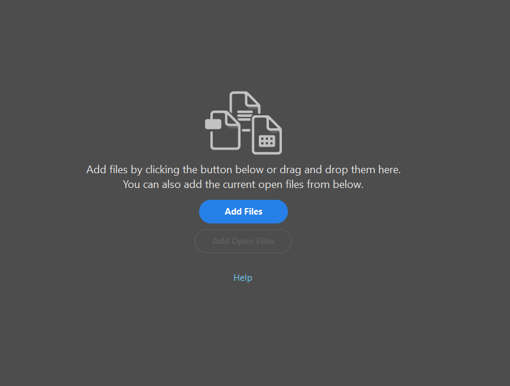
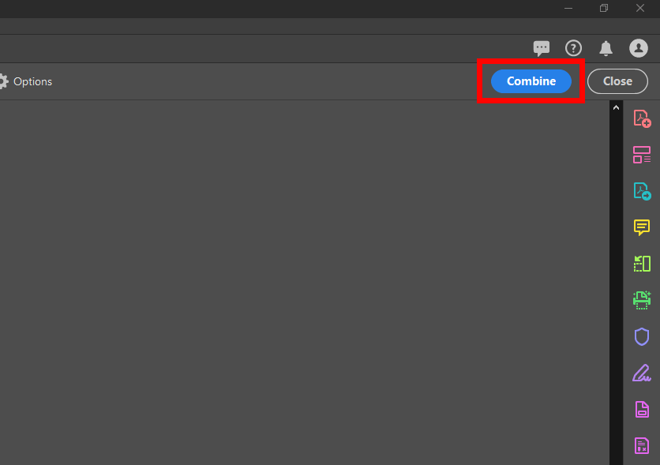

Combining PDFs
Closing Unresponsive Programs
File Explorer
Combining PDFs
Closing Unresponsive Programs
File Explorer
Step 1
Step 2
Step 3
If you don't see combine files, click "See All Tools" on the right

Click "Add Files" to choose files with the file explorer.
Click "Add Open Files" to add files that are already open in Acrobat.

